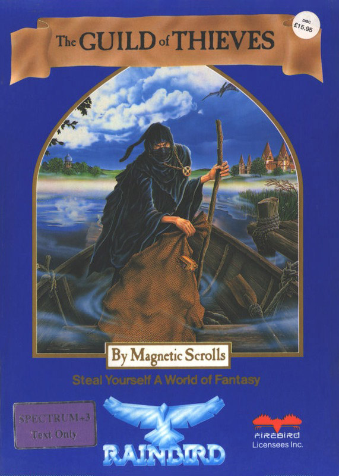
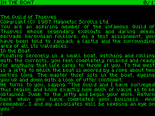

Guild of Thieves

{kind=link}

| Publisher: | Rainbird |
| Price: | £15.95 |
| Year: | 1988 |
| Source: | CRASH, Issue 51 |

When The Guild of Thieves was voted Game of the Year, Spectrum owners went quietly green with envy. Now at last the game has been released for the +3 and all over the country adventurers are opening their shiny blue boxes with bated breath.
Inside is a game more than likely to live up to everyone’s expectations. As a burglar, complete with stripy sweat shirt and swag bag, you have applied for membership of the Kerovnian Guild of Thieves. To prove your criminal eligibility to join, the Master Thief has devised a test: explore an island and thoroughly sack it of all available treasure before returning.

The adventure begins in the Master Thief’s boat. You jump confidently to the jetty and begin a survey of the expansive countryside. The numerous locations range from castle to cave and from scrub to snow-capped peak. The descriptions, even without the graphics much-praised on other formats, are extremely atmospheric; even the most commonplace objects have their own characteristics. Exploration has some very realistic qualities: as you wander through the castle you can run your fingers casually along the piano keys or try your skill at potting the billiard balls.
The treasures are often quite easy to locate but difficult to collect. A jewel hanging from the ceiling of a cave is about to drop into a bubbling pool of quicksand; a silver chalice is inconveniently placed in the cage of a savage bear. Reckless burglars quickly come to grief!
The puzzles are often tough but at least have the virtue of being logical. The adventure is certainly more accessible than The Pawn which was occasionally open to charges of excessive obscurity. In The Guild it’s sometimes the very obviousness of the solution which makes a problem difficult.
The parser is up to Magnetic Scrolls’ usually high standards: as well as complex sentences it accepts FIND and SEARCH FOR commands to locate objects you may have forgotten or misplaced. The GO TO command lets you move from one location to another without typing in all the directions in between. In practice this can be quite dangerous as you can’t stop the command once entered and the program marches you straight into whatever obstacles (for example a closed drawbridge) there may be in the way.
A small quibble is the absence of a RAMSAVE command. Constantly saving to disc gets a little tedious, especially in an adventure in which sudden death in the most innocent of locations is a constant possibility.
The Rainbird packaging comes with, among other goodies, a Contract of Service with the Guild of Thieves and a playing guide cleverly disguised as ‘What Burglar’ magazine. This last item also acts as combined hint sheet and program protection: several problems are listed and a series of codes printed underneath. Enter these codes and a cryptic hint (but not one that gives the whole game away) is be displayed.
The Guild of Thieves easily lives up to its reputation: a well-crafted scenario, immediately accessible puzzles, and a flexible parser make this a must for the compulsive adventurer. Even at the comparatively high price, it’s a steal.
| Overall: | 90% |